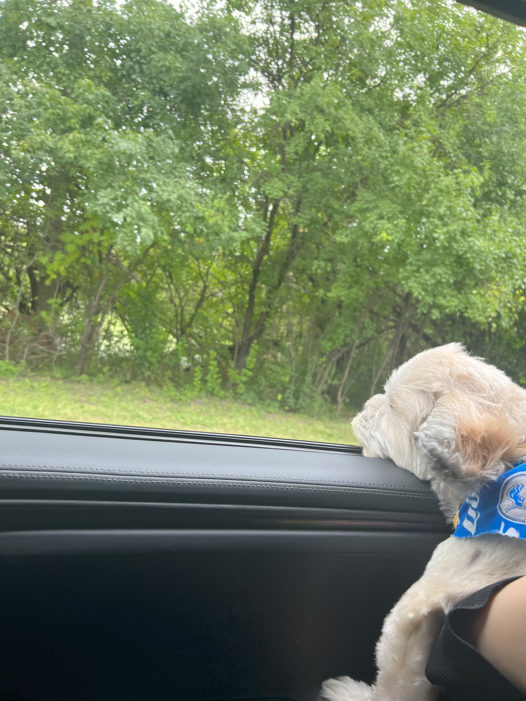
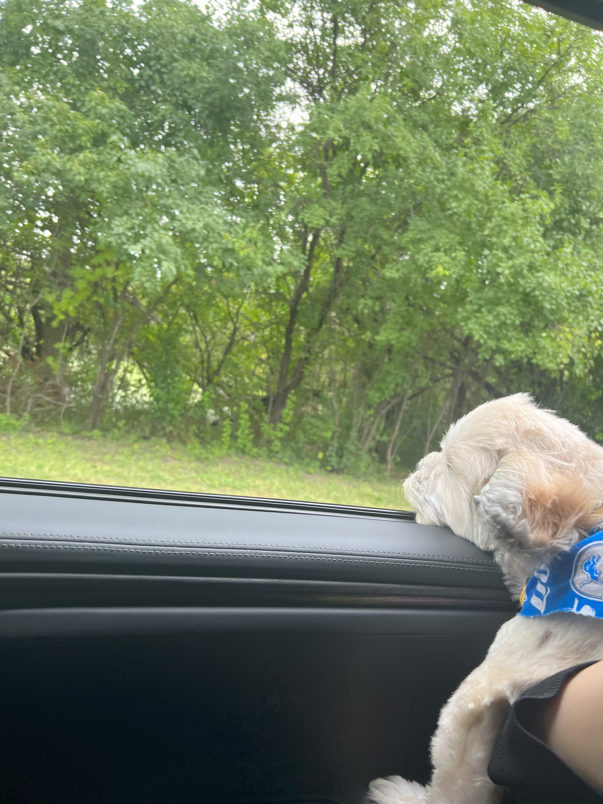

Jojo is a 14 year old dog that has grown up with me. He’s a Lhasa-Apso which is a breed from Tibet that’s known to be a watchdog. Funny enough, Jojo acts exactly like a watchdog. He likes to spend his days sitting next to a window looking and barking at people passing by. He is only a watchdog though, as he gets scared very easily.
His favorite thing in life is food and his favorite foods are sweet potatoes and naan. He loves walks as well, however he will not go outside if it’s raining or if there’s a lot of snow on the ground. He’s taken some old blankets and pillows we had to make his own bed. He’s also trilingual, able to understand English, Hindi, and Japanese.

 
